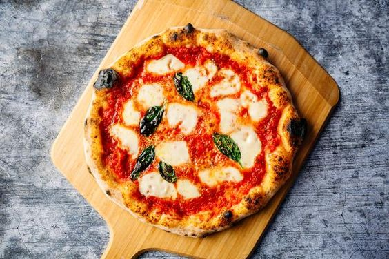

Pão de Queijo
Pão de Queijo are yummy gluten-free, wheat-free breads that are good for those with celiac disease or gluten intolerance. Serve them plain or with marinara sauce. For more variety, try adding an herb seasonings, such as Italian seasoning, or try substituting other cheeses for the Parmesan.
Beans and Rice
:max_bytes(150000):strip_icc():format(webp)/4262794-3c9c3f5c9da74e0db554e6c27e250f75.jpg)
Jessica's company had a Mardi Gras party and I wanted to make a flavorful red beans and rice recipe that everyone would love, so they made Jessica's red beans
Classic Margherita Pizza
Invented in the 1800s, pizza margherita showcases the colors of the Italian flag: red from the tomato sauce, white from the mozzarella, and green from the basil. It's believed that the margherita is named after Queen Margherita of Savoy, an Italian queen in the 1800's.